الصور والإنفوغراف
ألبومات عدسة شهاب: الميدان، الحياة اليومية، والتراث — اضغط أي صورة لفتح العارض.
12ألبومًا142صورة2إنفوغرافآخر تحديث: اليوم
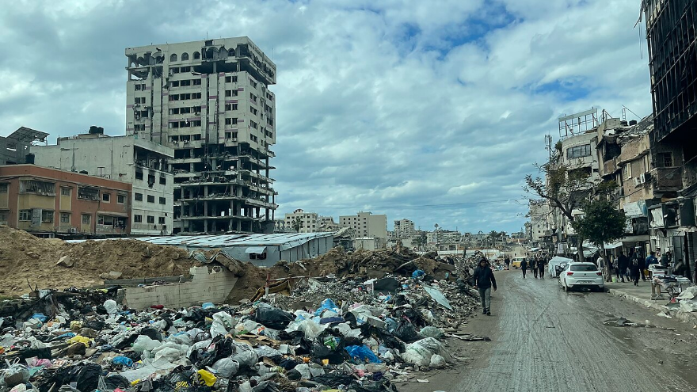
غزةعدسة شهاب ترصد آثار القصف على حي الرمال18 صورة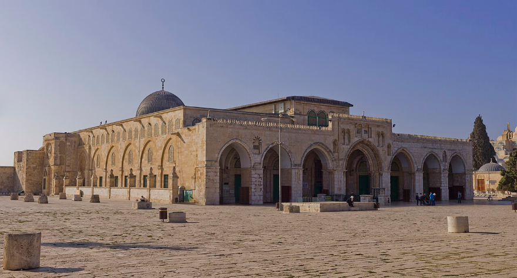
القدسصلاة الجمعة في باحات المسجد الأقصى رغم قيود الاحتلال12 صورة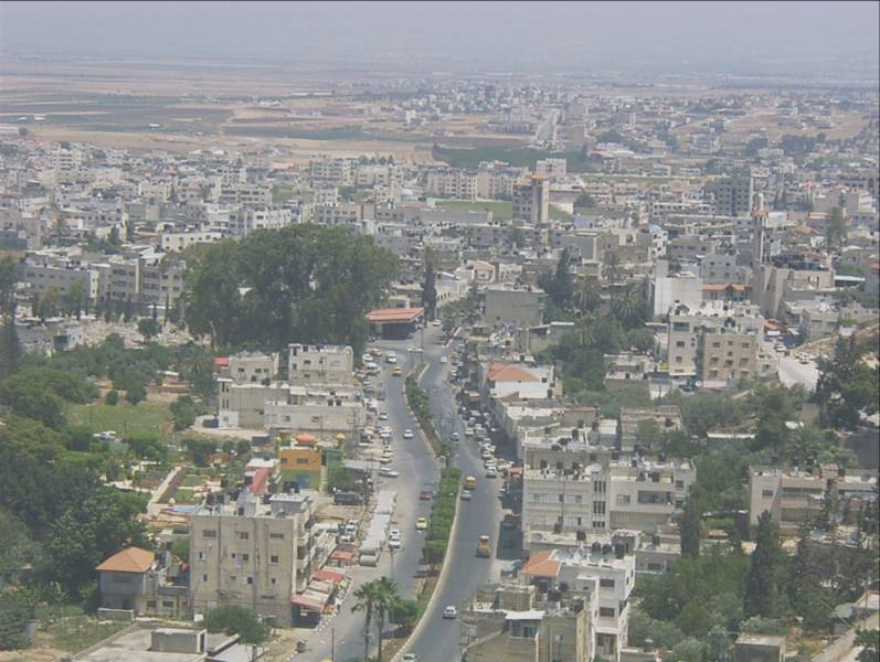
الضفة الغربيةموسم قطف الزيتون في سهول جنين9 صور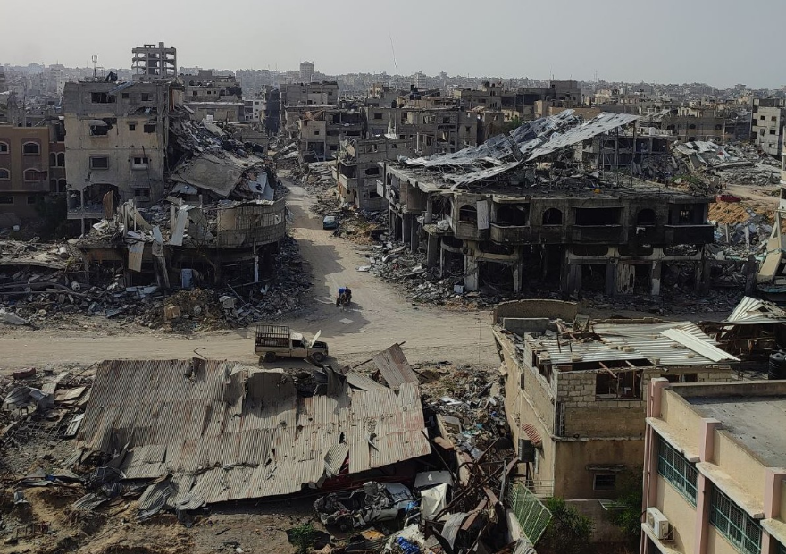
غزةخيام النزوح في خان يونس بعد عامين من التهجير15 صورةإنفوغرافبالأرقام | حصيلة العدوان على غزة خلال عامين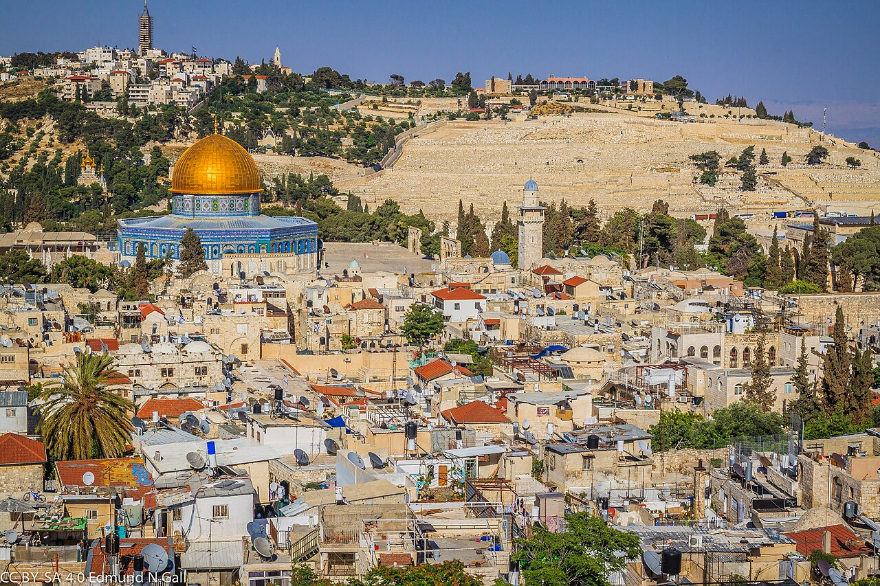
القدسأسواق البلدة القديمة قبيل شهر رمضان21 صورة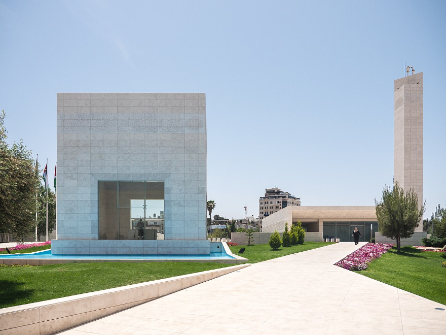
الضفة الغربيةوقفة تضامنية مع الأسرى في رام الله7 صورإنفوغرافخريطة | مراحل الحصار على قطاع غزة منذ 2007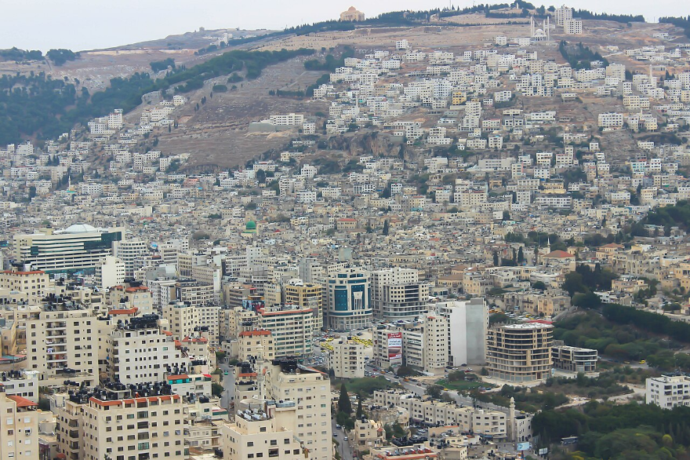
الضفة الغربيةحرفة صناعة الصابون النابلسي تصارع الانقراض11 صورة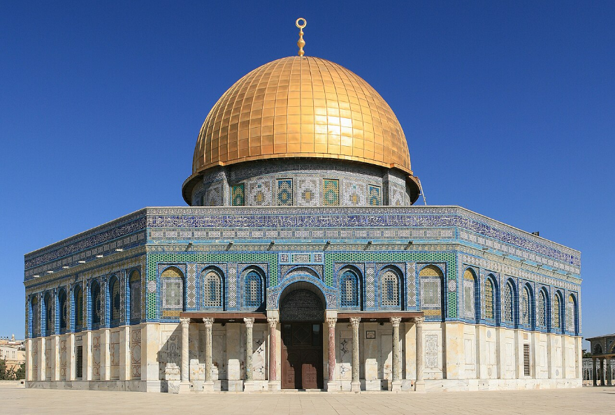
القدسقبة الصخرة عند الغروب6 صور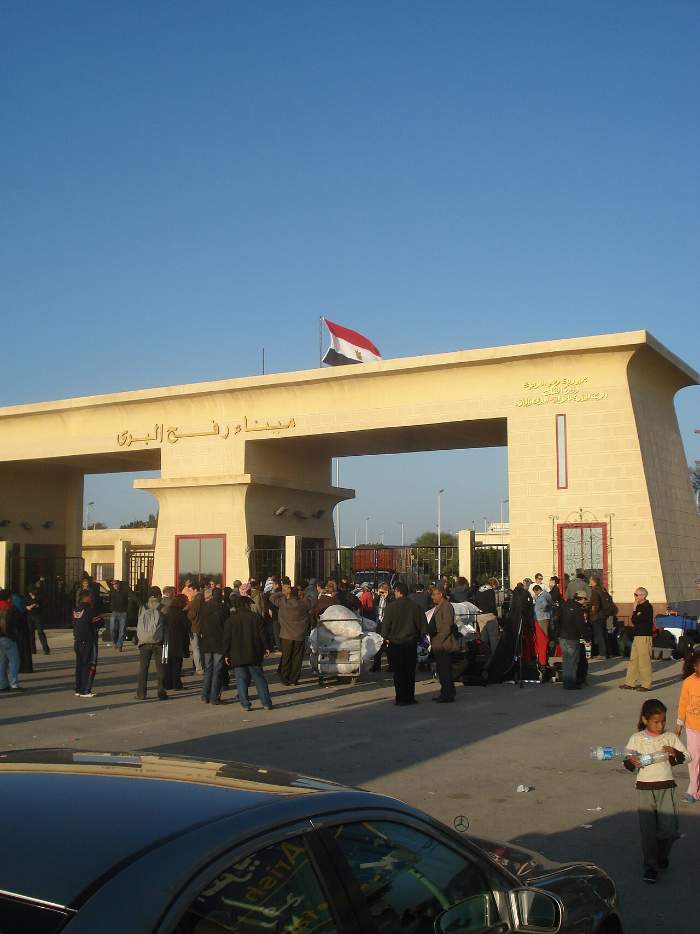
غزةعودة النازحين إلى شمال القطاع سيرًا على الأقدام24 صورة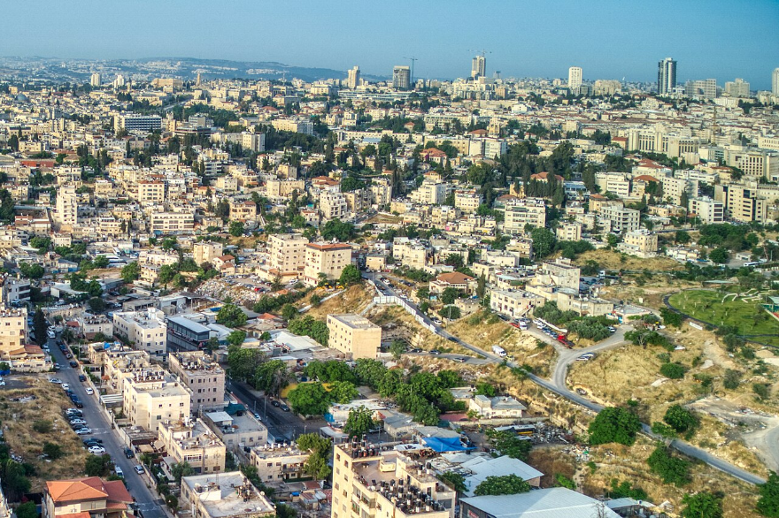
القدساعتصام أهالي حي الشيخ جراح8 صور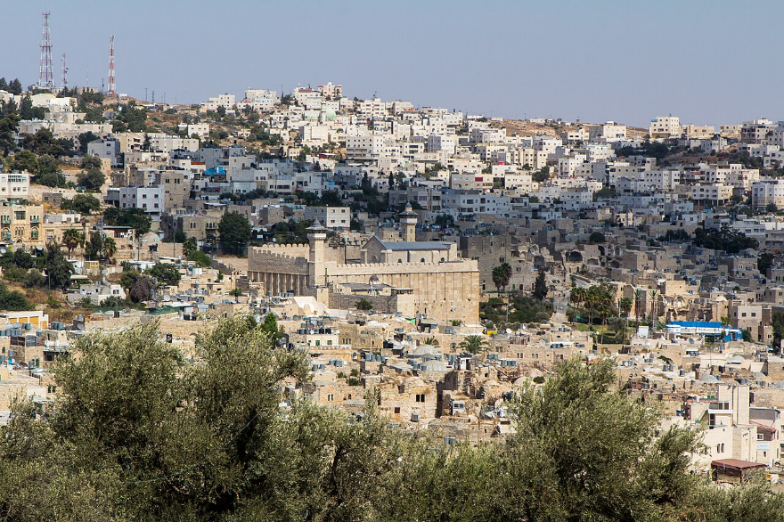
الضفة الغربيةصناعة الفسيفساء التقليدية في الخليل10 صور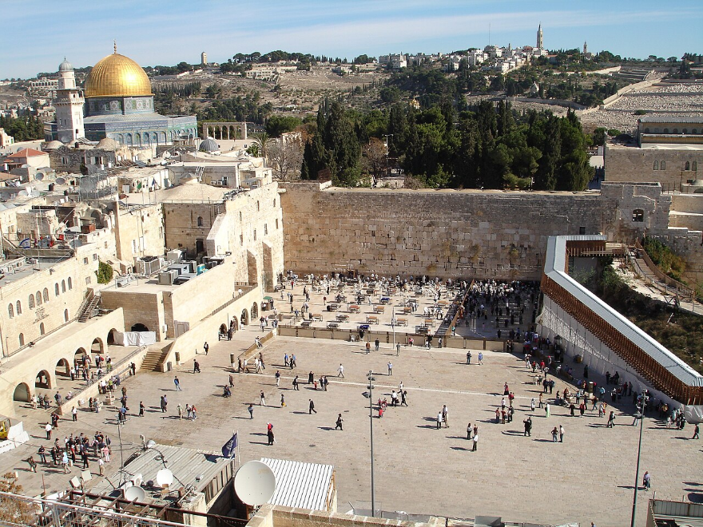
القدسمواسم الحصاد في أراضي بيت لحم13 صورة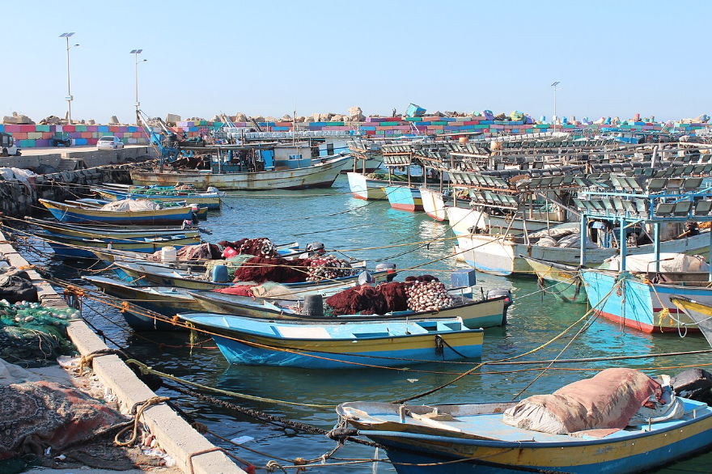
غزةميناء غزة يستقبل أول قافلة مساعدات بحرية17 صورةإنفوغرافإنفوغراف | أعداد النازحين حسب المحافظة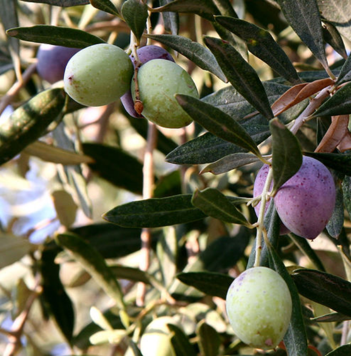
الضفة الغربيةموسم قطف الزيتون في قرى رام الله — عدسة شهاب18 صورة